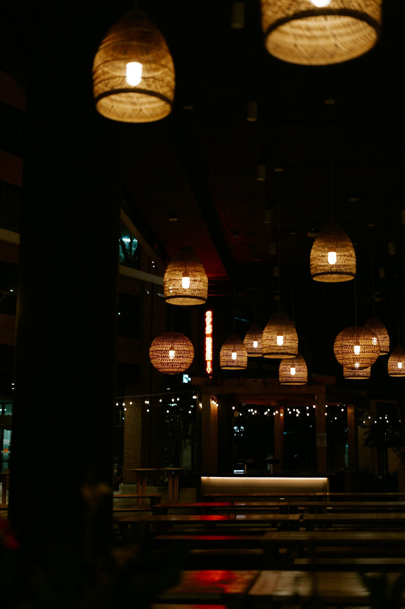

“One cannot think well, love well, sleep well, if one has not dined well.”Virginia Woolf, A Room of One’s Own
Gent is the first city in the guide. The selection is based on the MICHELIN Guide 2026, Gault&Millau 2026, the restaurants’ own websites and local press (HLN, Nieuwsblad, Made in). Nothing is invented: anything we could not verify is shown as unknown. Price level (€–€€€€) comes only from the Michelin Guide; “from €” is the lowest menu/lunch price found in a source. Sources are mostly in Dutch; menu notes are translated faithfully, guide descriptions are shown in the original Dutch.
Coordinates: Nominatim / OpenStreetMap. Map © OpenStreetMap contributors (greyscale on the home page, colour on the detail page). Mood images: Unsplash (Unsplash License) – they are not photos of the restaurants themselves.